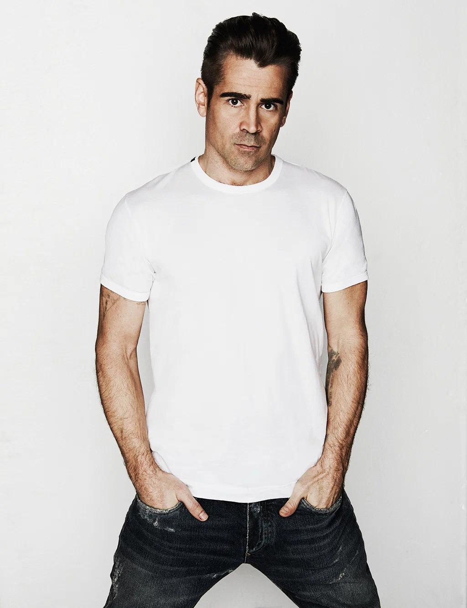

| Герой фильма | Исполнитель роли | Дата рождения | Другие фильмы с актером | Фотография | Биография |
|---|---|---|---|---|---|
| Микки Пирсон | Мэтью Макконахи | 4 ноября 1969 |
|
Кинопоиск | |
| Рэй | Чарли Ханнэм | 10 апреля 1980 |
|
Кинопоиск | |
| Тренер | Колин Фаррелл | 31 мая 1976 |
|
 | Кинопоиск |
| Флетчер | Хью Грант | 9 сентября 1960 |
|
Кинопоиск | |
| Розалинд | Мишель Докери | 15 декабря 1981 |
|
Кинопоиск |